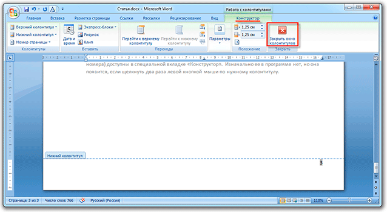
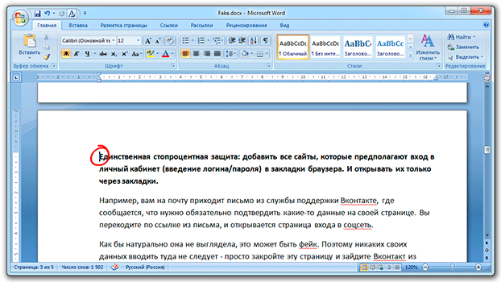

Нумерация страниц в Word
В этом уроке я покажу, как пронумеровать страницы в Ворде. Мы научимся не только добавлять номера, но и настраивать их.
Как сделать нумерацию
- В верхней части программы откройте раздел «Вставка».
- Щелкните по пункту «Номер страницы» и выберите подходящий вариант расположения: вверху, внизу или на полях.
Сразу после этого откроется меню колонтитулов. Если всё устраивает, просто закрываем его, нажав на значок крестика в верхней правой части окна программы (во вкладке «Конструктор»).
Вот и всё! Теперь все страницы пронумерованы. И если в документе что-то изменится и это отразится на их количестве, то Ворд автоматически всё исправит.
На заметку. Все настройки доступны в специальной вкладке «Конструктор». Изначально ее в программе нет, но она появляется, если щелкнуть два раза левой кнопкой мыши по нужному колонтитулу (полю).
Со второй страницы
Довольно часто первый лист в документе должен быть титульным. По правилам он не нумеруется. Некоторые люди поступают так: создают отдельный документ, где есть только этот лист, и создают еще один файл с основным содержимым. Так, конечно, можно делать, но не очень-то удобно. Гораздо проще настроить определенным образом нумерацию — чтобы она начиналась со второй страницы.
Способ 1
- Переходим в раздел «Вставка» вверху программы.
- Нажимаем на и выбираем вариант расположения.
- Щелкаем по «Нижний колонтитул» или «Верхний колонтитул» в зависимости от того, где у вас стоят цифры. И в списке выбираем «Изменить верхний/нижний колонтитул».
Далее открывается новая вкладка «Конструктор», где нужно щелкнуть по пункту «Особый колонтитул», чтобы там появилась птичка. После чего нажимаем на кнопку «Закрыть окно» справа.
Способ 2
Во вкладке «Макет» или «Разметка» нажимаем на маленькую кнопку со стрелкой в нижней части, там, где «Параметры».

Откроется небольшое окошко, где нужно открыть вкладку «Источник бумаги» и там поставить птичку на пункт «первой страницы». Ну, и, конечно, нажать «ОК», чтобы изменения вступили в силу.
Как настроить
Бывает, нужно сделать так, чтобы листы были пронумерованы не с цифры 1, а с какой-то другой. Например, с
2 или 3.
Настроить это очень просто: в разделе «Вставка» щелкаем по кнопке  и из списка выбираем «Формат».
и из списка выбираем «Формат».
Появляется маленькое окошко. Внизу печатаем ту цифры, с которой нужно начать.
В примере эта цифра 2, но может быть любое другое значение: 3, 5, 7 и т.д.
Нестандартные решения
Бывает, нужно сделать так, чтобы внутри документа у какого-то листа (или нескольких) не было номера. Например, чтобы добавить туда график, таблицу или рекламный буклет. Или необходимо как-то иначе настроить нумерацию. Например, чтобы не было цифры не только на первой, но и на втором, и на третьем листе.
Настроить это можно, но придется повозиться. Хотя, честно говоря, это только объяснять долго — делается же это весьма быстро.
1. Сначала убираем цифры, если они уже проставлены. Для этого переходим во «Вставку», щелкаем по и выбираем «Удалить».
2. Далее щелкаем мышкой в том месте, откуда должна начинаться нумерация. Например, если мне нужно, чтобы две первые страницы документа были без цифры, значит, ставлю мигающий курсор в самое начало третьего листа.
3. Переходим во вкладку «Макет» или «Разметка», щелкаем по «Разрывы» и из списка выбираем пункт «Следующая».
4. Далее щелкаем два раза мышкой по тому месту, где должна быть цифра (в верхней или нижней части листа). Появится примерно такая надпись: Нижний колонтитул –Раздел 2-
5. В верхней части программы будет вкладка «Конструктор» и там будет выделена оранжевым цветом кнопка «Как в предыдущем разделе». Вот на нее нужно нажать, чтобы она стала неактивна. И еще если установлена птичка на пункте «Особый колонтитул для первой страницы», то её нужно убрать.
6. А теперь вставляем нумерацию. Для этого можно просто нажать на специальную кнопку в «Конструкторе».
7. Когда всё готово, нажимаем «Закрыть окно».
Как удалить
Делается это точно так же, как и при добавлении нумерации: через раздел «Вставка» и пункт